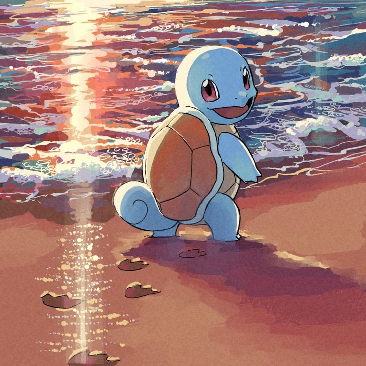
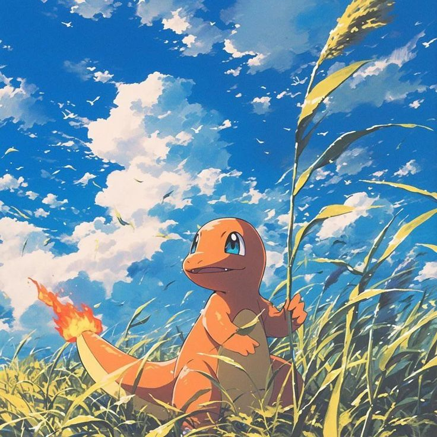
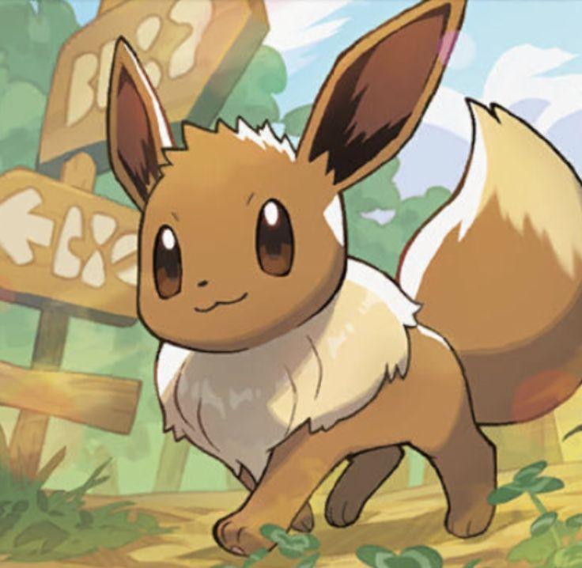
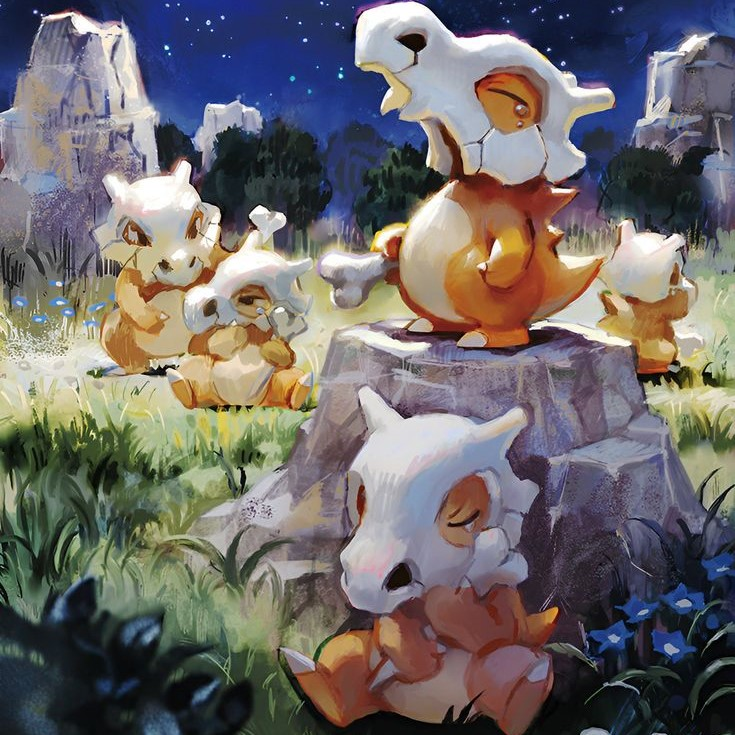
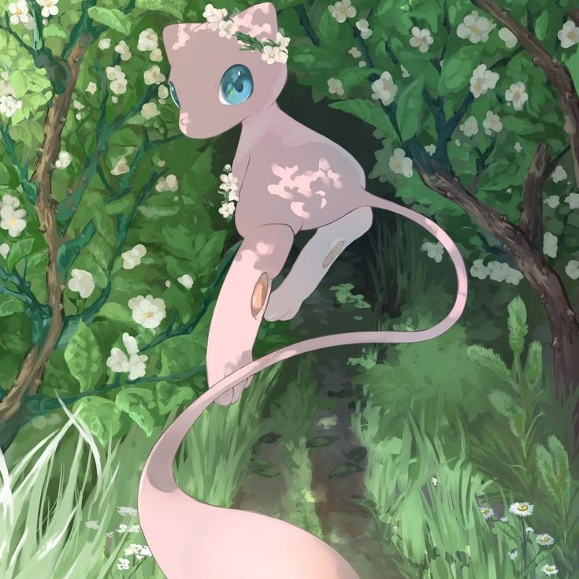

-
Bulbasauro - PS 70

Pokémon estratégico e versátil, graças à sua combinação de tipos Grama/Veneno. Ele se destaca contra adversários dos tipos Água, Pedra e Terra, utilizando movimentos como Chicote de Cipó e Folha Navalha para causar dano eficaz.
FRAQUEZA: RECUO: -
Squirtle - PS 60
Pokémon do tipo Água, conhecido por ser ágil e defensivo em batalhas. Sua principal força está em movimentos baseados em água, como Jato d'Água e Bolha, que são altamente eficazes contra adversários dos tipos Fogo, Terra e Pedra. Pode usar ataques como Reflexo para aumentar sua defesa ou Retração para se proteger contra danos, tornando-o difícil de derrotar rapidamente.
FRAQUEZA: RECUO: -
Charmander - PS 60
Pokémon do tipo Fogo, conhecido por sua aparência cativante e a chama na ponta de sua cauda, que reflete sua vitalidade. Em batalhas, Charmander é ágil e ofensivo, focado em ataques que causam dano considerável. Movimentos como Brasas e Lança-Chamas são suas principais armas, sendo altamente eficazes contra Pokémon dos tipos Grama, Gelo, Inseto e Aço.
FRAQUEZA: RECUO: -
Pikachu - PS 60

Pokémon do tipo Elétrico, famoso por sua velocidade e habilidade de causar dano rápido em batalhas. Seu movimento icônico, Choque do Trovão, é eficaz contra Pokémon do tipo Água e Voador, tornando-o uma escolha ideal contra esses adversários. Pikachu também pode aprender técnicas como Cauda de Ferro e Onda de Choque, aumentando sua versatilidade ofensiva.
FRAQUEZA: RECUO: -
Eevee - PS 60
Pokémon do tipo Normal, famoso por sua incrível adaptabilidade e potencial para evoluir em várias formas diferentes, dependendo das condições e pedras evolutivas. Em batalha, Eevee é um lutador versátil, com acesso a uma ampla gama de movimentos, como Investida e Ataque Rápido, que aproveitam sua boa velocidade.
FRAQUEZA: RECUO: -
Cubone - PS 50
Pokémon do tipo Terra, conhecido por sua personalidade melancólica e pelo crânio que usa como capacete, que pertence à sua mãe. Em batalha, Cubone se destaca por sua resistência e por utilizar ataques físicos poderosos. Movimentos como Osso Bumerangue e Clube de Osso são suas marcas registradas, causando danos significativos e muitas vezes acertando duas vezes.
FRAQUEZA: RECUO: -
Mew - PS 60
Pokémon do tipo Psíquico extremamente raro e poderoso, conhecido por sua aparência adorável e misteriosa. Em batalha, Mew é incrivelmente versátil devido à sua capacidade de aprender praticamente qualquer movimento, independentemente do tipo. Isso o torna uma escolha estratégica e imprevisível, capaz de se adaptar a qualquer situação.
FRAQUEZA: RECUO: